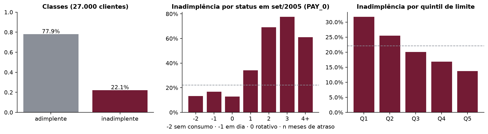
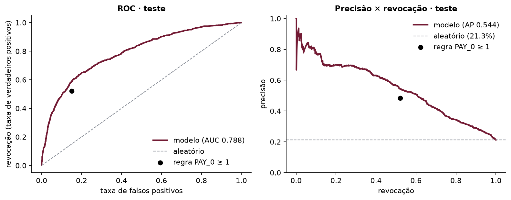
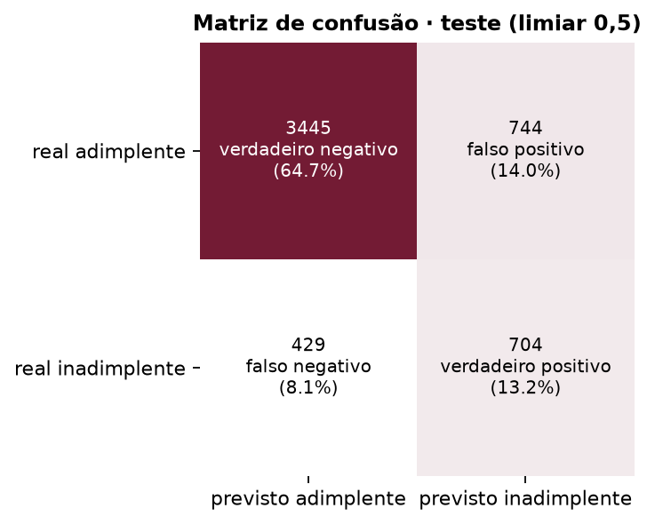
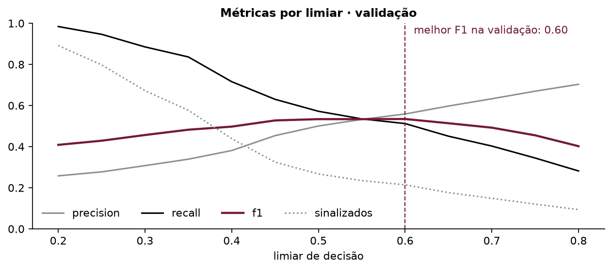
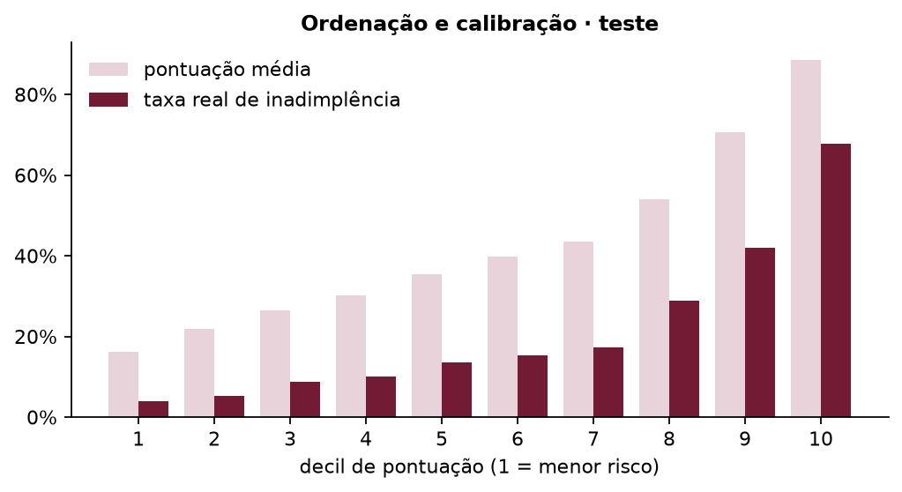
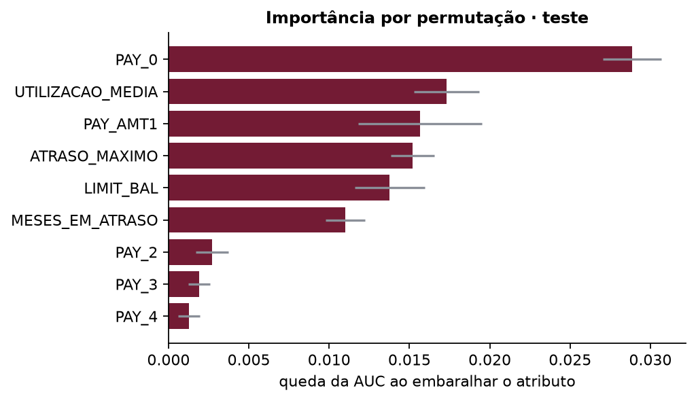

| Integrantes | Andre Gustavo Specht · Arthur Vinicius Hassuma · Gabriel F. Rocha · Nicolas Wajima · Pablo Arman Schuller · Victor da Rocha |
| Repositório | github.com/gabrielforster/mlops-credit-default-prediction |
| Slides | Parte | Apresenta |
|---|---|---|
| 3–4, 7 | Problema, quem usa, dados e preparação | Andre Gustavo Specht |
| 5, 8, 18 | Conceitos, seleção de atributos e considerações finais | Arthur Vinicius Hassuma |
| 9, 12, 19 | Competição entre modelos, ordenação do risco e referências | Nicolas Wajima |
| 10–11, 13 | Avaliação, matriz de confusão, limiar, erros e limitações | Pablo Arman Schuller |
| 14–15, 17 | Demonstração ao vivo e contribuições da equipe | Victor da Rocha |
| 1–2, 6, 16 | Abertura, organização do pipeline e retreino automático | Gabriel F. Rocha |
Objetivo. Prever, a partir do perfil e dos últimos seis meses de fatura e pagamento, se um cliente de cartão de crédito vai deixar de pagar a fatura do mês seguinte.
Por que importa. Inadimplência é perda direta para o banco. Saber com antecedência permite agir antes do atraso, em vez de cobrar depois.
Tipo de problema. Classificação binária supervisionada (inadimplente × adimplente) com classes desbalanceadas.
O modelo apoia a decisão e não a substitui: a pontuação ordena clientes por risco para que pessoas decidam a ação.
PAY_x), valor da fatura (BILL_AMTx) e valor pago (PAY_AMTx) em cada mês.EDUCATION 0/5/6, MARRIAGE 0, PAY_x −2 e 0).O atraso recente é o sinal mais forte: quem atrasou dois meses em setembro tem 69% de inadimplência, contra 13% a 17% de quem não estava atrasado.

Acurácia engana: responder sempre "adimplente" acerta 78%.
Precisão: dos sinalizados, quantos de fato ficam inadimplentes. Revocação: dos inadimplentes, quantos são encontrados. F1: média harmônica das duas; é a métrica principal.
AUC-ROC: o quanto o modelo ordena bem o risco, independentemente do limiar.
Regressão logística: modelo linear e interpretável; serve de referência.
Random Forest: conjunto de árvores de decisão que capta interações e não linearidades (Breiman, 2001).
class_weight="balanced" dá mais peso à classe rara durante o treino.
Treino, validação e teste separados: escolhas feitas na validação; o teste é usado uma única vez.
Sem vazamento de dados: o pré-processamento é ajustado só no treino e viaja dentro do modelo.
Seleção de atributos por três métodos e votação. MLOps: versionamento, rastreio (MLflow) e retreino automático.
src/ e 42 testes automatizados.config/config.yaml parâmetros (sem caminhos fixos) src/ ETL, seleção, modelos, promoção, demos notebooks/01..06 ciclo + avaliação final models/ modelo vigente + histórico reports/figuras/ gráficos desta apresentação mlruns/ histórico do MLflow tests/ 42 testes (pytest)
| Tratamento | Justificativa |
|---|---|
Códigos não documentados (EDUCATION 0/5/6, MARRIAGE 0) → "outros" | São 399 linhas sem significado no dicionário. Agrupar evita descartar clientes e não inventa uma categoria. |
PAY_x = −2 e 0 mantidos como "sem consumo" e "rotativo" | Aparecem em milhares de linhas e têm taxa de inadimplência própria. Tratá-los como erro apagaria sinal real. |
| Outliers mantidos (8% a 10% nas faturas e pagamentos) | São valores reais de clientes de alto limite, e não erros de digitação. Os modelos são robustos a eles. |
| Atributos derivados: uso do limite, razão de pagamento, meses em atraso, maior atraso | Resumem seis meses de comportamento em sinais que um analista reconheceria. Cada um usa só a própria linha, então não há vazamento. |
| Partição treino / validação / teste (60 / 20 / 20) por hash do ID | Cada cliente cai sempre na mesma partição, mesmo quando chegam lotes novos. O teste nunca contamina o treino. |
Padronização e one-hot ajustados só no treino, dentro do Pipeline | Evita vazamento e garante que a previsão aplique exatamente a mesma transformação do treino. |
Cada método escolhe os 10 atributos que considera mais úteis, olhando só o treino:
SelectKBest, ANOVA F): mede a diferença das médias entre adimplentes e inadimplentes.É eleito quem recebe pelo menos 2 dos 3 votos. Combinar métodos de naturezas diferentes reduz o viés de qualquer um deles.
Sexo, idade, escolaridade e estado civil não receberam nenhum voto. O modelo final não usa dados demográficos.
| Atributo | Estatístico | Random Forest | RFE | Votos |
|---|---|---|---|---|
ATRASO_MAXIMO | ✓ | ✓ | ✓ | 3 |
PAY_0 | ✓ | ✓ | ✓ | 3 |
LIMIT_BAL | ✓ | ✓ | ✓ | 3 |
MESES_EM_ATRASO | ✓ | ✓ | ✓ | 3 |
PAY_2 | ✓ | ✓ | – | 2 |
PAY_AMT1 | – | ✓ | ✓ | 2 |
PAY_3 | ✓ | – | ✓ | 2 |
PAY_4 | ✓ | – | ✓ | 2 |
UTILIZACAO_MEDIA | ✓ | ✓ | – | 2 |
Mais 8 atributos com 1 voto (ex.: BILL_AMT1, RAZAO_PAGAMENTO) e 12 sem votos. | ||||
Os dois modelos recebem os mesmos 9 atributos, o mesmo treino e a mesma validação, e são comparados pela mesma métrica.
| Modelo | Hiperparâmetros | F1 | AUC-ROC |
|---|---|---|---|
| A · regressão logística | C=1.0, class_weight=balanced | 0,529 | 0,753 |
| B · Random Forest | 150 árvores, profundidade ≤ 8, ≥ 20 clientes por folha, balanced | 0,544 | 0,783 |
class_weight=balanced dá mais peso aos 22% de inadimplentes. Sem isso, o modelo tenderia a prever sempre "adimplente".Teste: 5.322 clientes que o modelo nunca viu, 21,3% inadimplentes.
| Acurácia | Precisão | Revocação | F1 | |
|---|---|---|---|---|
| Sempre "adimplente" | 0,787 | 0 | 0 | 0 |
Regra: atrasou em set (PAY_0 ≥ 1) | 0,779 | 0,483 | 0,522 | 0,502 |
| Modelo (limiar 0,5) | 0,780 | 0,486 | 0,621 | 0,546 |


Falso negativo (429): inadimplente tratado como bom pagador. É perda de crédito, o erro caro.
Falso positivo (744): bom pagador sinalizado. Gera um contato preventivo desnecessário, um custo menor.

O limiar foi escolhido na validação. O F1 é praticamente o mesmo entre 0,5 e 0,6. Abaixando para 0,3, o modelo encontra 89% dos inadimplentes, mas sinaliza 65% da base.

Entre os 10% de maior pontuação, 67,7% ficam inadimplentes, 3,2 vezes a média. Entre os 10% de menor pontuação, só 3,9%. A pontuação não é uma probabilidade calibrada: o peso balanced a desloca para cima.

Embaralhando cada atributo no teste, a maior queda de AUC vem de PAY_0, seguido do uso do limite e do valor pago. PAY_2 a PAY_4 acrescentam pouco: ATRASO_MAXIMO já resume o que eles informam.
dos falsos negativos não tinham atraso no último mês. São clientes "com cara de bom pagador" (pontuação mediana de 0,37), e nada no histórico de pagamento indicava risco.
Falsos positivos são, em geral, clientes que já tinham atrasado (atraso máximo mediano de 2 meses) e pagaram no mês seguinte.
Por grupo: a revocação é parecida entre os sexos (63% e 61%). A taxa de falso positivo de quem tem ensino médio (23,7%) é maior que a de pós-graduação (16,2%), o que pede monitoramento antes de uso real.
À esquerda, o cliente: perfil e os últimos seis meses de status, fatura e pagamento.
À direita, a resposta do modelo:
Cada alteração no formulário reavalia o cliente em menos de 0,2 s. Uma entrada inválida (por exemplo, idade 7) é recusada com uma mensagem.
Exemplo: 2 meses de atraso em set e ago, 96% do limite usado em setembro → 86,5%, risco muito alto.
Mesmo formulário, outro cliente: limite de 200 mil, em dia nos seis meses e pagando a fatura inteira → 20,4%, risco baixo. Agora todas as barras reduzem o risco.
git switch n3-machine-learning pip install -r requirements.txt python -m src.demo_web
Abre http://127.0.0.1:8000. Só usa a biblioteca padrão do Python, então funciona sem internet. Há também uma versão de terminal: python -m src.demo --id 11.
Também dá para carregar qualquer um dos 3.000 clientes reais que o modelo nunca viu.
Um workflow do GitHub Actions roda o ciclo completo toda segunda-feira ou sob demanda, testa o código e grava o estado de volta no repositório.
O vencedor de cada ciclo só substitui o modelo em uso se melhorar o F1 em pelo menos 0,01 nos mesmos dados de validação. Toda decisão fica registrada com o motivo.
Cada ciclo, modelo e métrica fica no MLflow. O PSI compara cada lote novo com os dados do modelo vigente para detectar mudança no perfil dos clientes.
Três ciclos executados: dois locais e um no GitHub Actions. Nos três, o modelo vigente foi promovido (no primeiro) ou mantido (nos dois seguintes), e as previsões foram reproduzidas a partir do arquivo salvo e do MLflow.
| Integrante | Desenvolvimento | Apresenta |
|---|---|---|
| Andre Gustavo Specht | Análise exploratória e preparação dos dados: validação, códigos não documentados, outliers, atributos derivados e partição por cliente | Problema, dados e preparação |
| Arthur Vinicius Hassuma | Seleção de atributos: os três métodos e a regra de votação; revisão dos conceitos e das referências | Conceitos, seleção de atributos e considerações finais |
| Gabriel F. Rocha | Arquitetura do repositório e do pipeline: configuração, MLflow, GitHub Actions com retreino semanal, promoção e drift | Abertura, pipeline e retreino automático |
| Nicolas Wajima | Modelagem: treino e competição entre regressão logística e Random Forest, hiperparâmetros e importância dos atributos | Competição, ordenação do risco e referências |
| Pablo Arman Schuller | Avaliação: comparação com alternativas simples, curvas ROC e precisão × revocação, escolha do limiar e análise de erros | Avaliação, erros e limitações |
| Victor da Rocha | Demonstração de uso: script e página web, apresentação e README | Demonstração ao vivo e equipe |